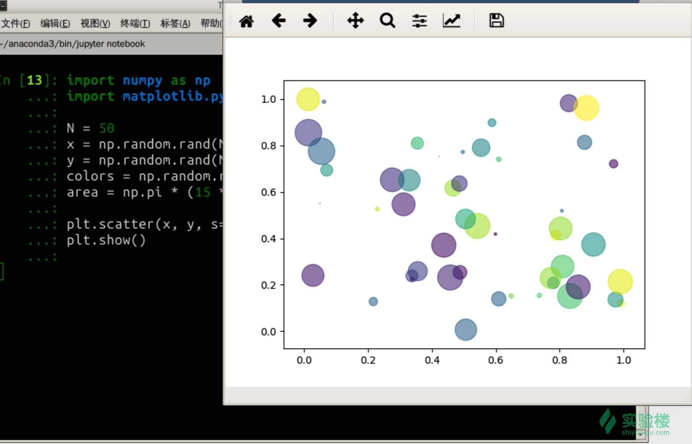
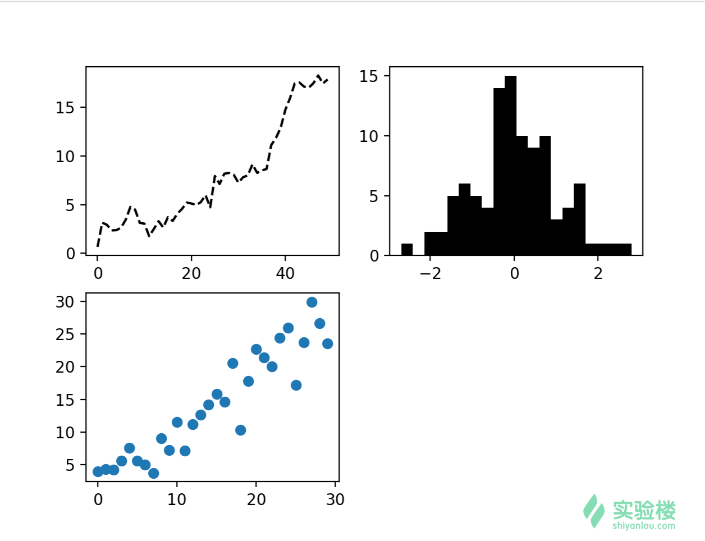
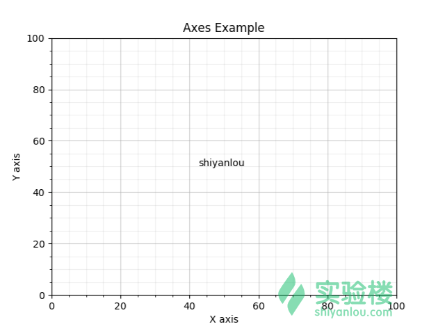
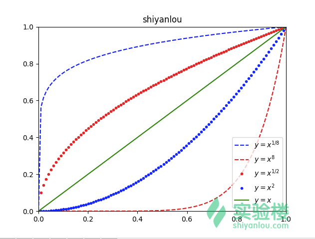
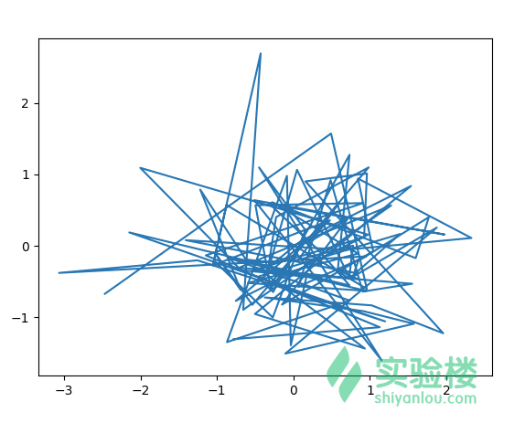
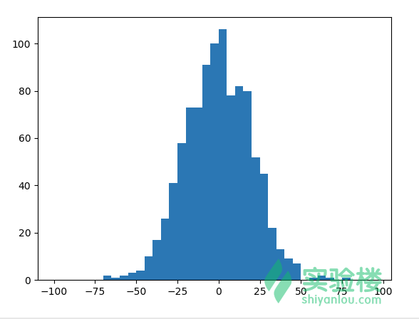
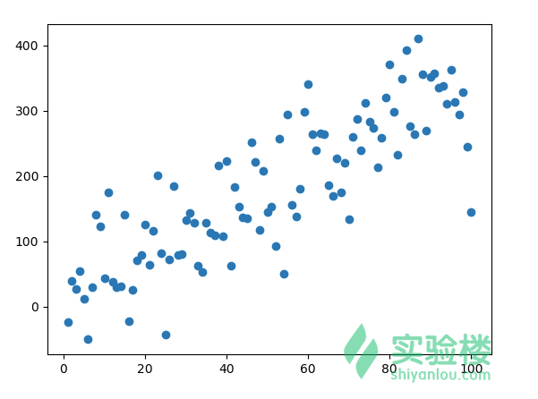
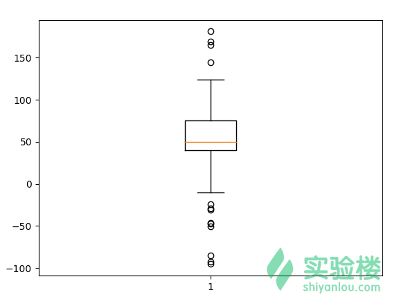
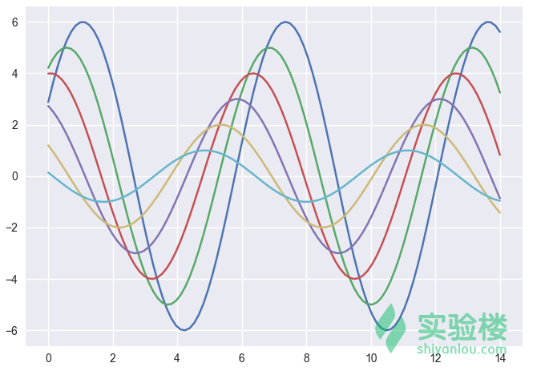
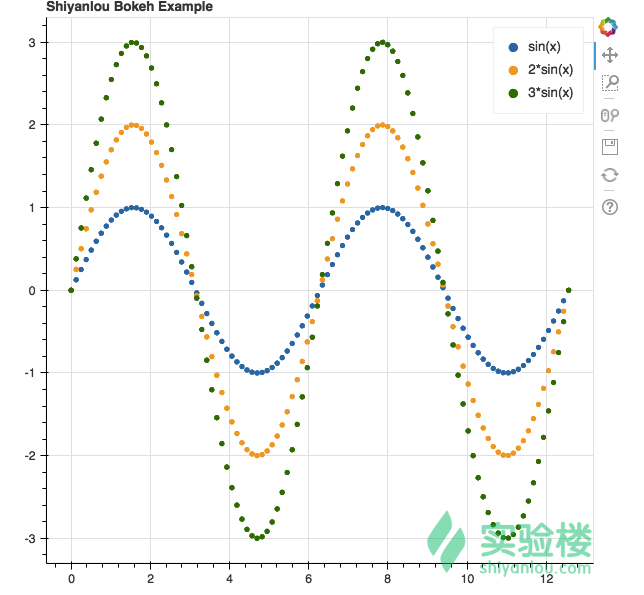

在数据分析中，数据可视化非常重要。我们可以将数据绘制成各种图形，比如直方图，散点图等，从图形中可以明显看出各种数据特征。本节实验中，我们将学习各种图形的用途，以及在 Python 中如何使用 matplotlib 以及其他工具绘制各种图形。
matplotlib 绘图；matplotlib 目前是 Python 中功能最强大的绘图软件包，在开始其他内容之前，先让我们看下使用 matplotlib 生成散点图的代码：
import numpy as np
import matplotlib.pyplot as plt
N = 50
x = np.random.rand(N)
y = np.random.rand(N)
colors = np.random.rand(N)
area = np.pi * (15 * np.random.rand(N))**2
plt.scatter(x, y, s=area, c=colors, alpha=0.5)
plt.show()
打开桌面终端启动 Anaconda IPython 交互式环境，输入以上代码执行以后，可以看到如下图效果： 
以上代码中，我们将 matplotlib.pyplot 导入后命名为 plt, 在后面所有的课程内容中，出现的 plt 都默认是 matplotlib.pyplot包。在代码最后一行 plt.show() 执行以后，将弹出一个窗口显示绘制的图形，这个时候 IPython 终端将不能输入任何代码，当我们关闭图形窗口以后，IPython 终端将恢复输入模式。
matplotlib 是面向对象的绘图工具包，绘制的图形中每一个元素都是一个对象，比如线条，文字，刻度等信息，可以通过修改这些对象的属性，从而改变绘图样式。
matplotlib 中主要的绘图对象列表如下：
Figure 对象，可以想象为一张画布；Axes 对象，字面理解为坐标轴（因为每一个 Axes 都有一套 X Y轴坐标系，绘制图形时基于此坐标系绘制。) 也可以认为是子图，在一个 Figure 对象中可以包含多个 Axes 对象，也就是说一张画布可以包含多个子图；Line2D 对象，代表线条；Text 对象，代表了文字，比如一张子图需要标题，就可以使用一个 Text 对象；虽然 matplotlib 是面向对象的绘图工具包，但是也提供了一些常用的绘图方法，可以直接调用 plt 模块相关方法就可以完成各种绘图需求，这是因为 plt 模块内部保存了当前的 Figure 对象信息，当使用 plt 的相关方法绘图时，底层实际调用了当前 Figure 对象的相关方法。在前面的散点图例子中，我们没有创建过任何 Figure 对象也成功的绘制出了图形，这就是因为 plt 会默认创建 Figure对象，并将它保存在 plt 模块内部。可以通过 plt.gcf() 和 plt.gca() 分别获取当前用于绘图的 Figure 和 Axes 对象。
我们可以通过 plt.figure() 创建一个新的 Figure 对象，然后在此 Figure 对象上创建 Axies 对象：
In [28]: fig1 = plt.figure()
In [29]: ax1 = fig1.add_subplot(1, 1, 1)
In [30]: fig1
Out[30]: <matplotlib.figure.Figure at 0x10e3a35f8>
In [31]: plt.gcf()
Out[31]: <matplotlib.figure.Figure at 0x10e3a35f8>
In [32]: ax1
Out[32]: <matplotlib.axes._subplots.AxesSubplot at 0x10e22f6d8>
In [33]: plt.gca()
Out[33]: <matplotlib.axes._subplots.AxesSubplot at 0x10e22f6d8>
In [34]: fig2 = plt.figure()
In [35]: ax2 = fig2.add_subplot(1, 1, 1)
In [36]: fig2
Out[36]: <matplotlib.figure.Figure at 0x10e415860>
In [37]: plt.gcf()
Out[37]: <matplotlib.figure.Figure at 0x10e415860>
以上代码中，我们分别创建了 fig1 和 fig2两个 Figure 对象，以及 ax1 和 ax2 两个 Axes 对象。可以看到，每当我们生成新的 Figure 对象时，plt.gcf() 获取到的当前的 Figure 对象也变成了新创建的 Figure 对象，因为他们的内存地址相同( at 字符后面是内存地址)。 fig.add_subplot(1, 1, 1) 方法，用于在 Figure 对象上创建一个新 Axes对象，由于 Figure 对象可以包含多个 Axes 对象，所以这里的参数含义是说，添加一个 Axes 对象到布局为一行一列的第一个位置上。当然可以改变布局，比如 fig.add_subplot(2, 2, 1) 含义是添加一个 Axes 对象到布局为两行两列的第一个位置上，也就是说我们依次调用 fig.add_subplot(2, 2, 2), fig.add_subplot(2, 2, 3), fig.add_subplot(2, 2, 4） 在 Figure 对象上插入四个 Axes 对象，布局为两行两列，如下代码：
In [70]: fig = plt.figure()
In [71]: ax1 = fig.add_subplot(2, 2, 1)
In [72]: ax2 = fig.add_subplot(2, 2, 2)
In [73]: ax3 = fig.add_subplot(2, 2, 3)
In [74]: ax1.plot(np.random.randn(50).cumsum(), 'k--')
Out[74]: [<matplotlib.lines.Line2D at 0x114df9b38>]
In [75]: _ = ax2.hist(np.random.randn(100), bins=20, color='k')
In [76]: ax3.scatter(np.arange(30), np.arange(30) + 3 * np.random.randn(30))
Out[76]: <matplotlib.collections.PathCollection at 0x114e6c748>
In [77]: fig.show()
以上代码，首先创建了一个 Figure 对象，然后接着插入了 3 个 Axes 对象，接着分别在 Axes 对象上绘制了累积和线图，直方图以及散点图，最后通过 fig.show() 方法显示出图形如下： 
matplotlib 绘制的图形可以设置各种属性，比如设置坐标系的刻度，标题，标签等属性。下面我们将通过具体的例子演示。 matplotplib 绘制图形时，基于 X, Y 轴坐标系绘图。我们可以设置 X, Y 坐标的各种属性，比如刻度，范围，标签等属性，示例代码如下：
import numpy as np
import matplotlib.pyplot as plt
fig = plt.figure()
ax = fig.add_subplot(1,1,1)
# 设置标题
ax.set_title("Axes Example")
major_ticks = np.arange(0, 101, 20)
minor_ticks = np.arange(0, 101, 5)
# 设置刻度
ax.set_xticks(major_ticks)
ax.set_xticks(minor_ticks, minor=True)
ax.set_yticks(major_ticks)
ax.set_yticks(minor_ticks, minor=True)
# 设置 X, Y 轴 标签
ax.set_xlabel("X axis")
ax.set_ylabel("Y axis")
# 设置网格
ax.grid(which='minor', alpha=0.2)
ax.grid(which='major', alpha=0.5)
# 添加文字
ax.text(42.5, 50, "shiyanlou")
以上代码中以 # 开始的行是注释。在 IPython 终端中，输入以上代，然后通过执行 fig.show() 方法显示绘制的图形如下： 
下面我们具体分析下以上代码，首先创建了一个 Figure 对象，接着在该 Figure 对象上创建了唯一一个 Axes 对象，后续的所有属性都基于该 Axes 对象设置:
ax.set_title 设置图形的标题；ax.set_xticks 设置 X 轴的刻度，其中 minor=True 参数表示设置更小的刻度；ax.set_yticks 设置 Y 轴的刻度；ax.set_xlabel 设置 X 轴的标签；ax.set_ylabel 设置 Y 轴的标签；ax.grid 开启图形的刻度网格，其中 minor=True 参数表示显示小刻度的网格；ax.text 为图形添加文字，前两个参数表示添加的文字在坐标系中的位置；可以看到设置各种属性非常简单，这些设置属性的方法还有很多可选参数，篇幅有限就不一一介绍了。
有的时候，我们想指定绘制的曲线的颜色，设置图例，该怎么办呢？示例代码：
import numpy as np
import matplotlib.pyplot as plt
x = np.linspace(0, 1,100)
fig = plt.figure()
ax = fig.add_subplot(1,1,1)
ax.set_title("shiyanlou")
ax.plot(x, x ** (1/8), 'b--', label=r'$y = x^{1/8}$')
ax.plot(x, x ** 8, 'r--', label=r'$y = x^{8}$')
ax.plot(x, x ** (1/2), 'r.', label=r'$y = x^{1/2}$')
ax.plot(x, x ** 2, 'b.', label=r'$y = x^{2}$')
ax.plot(x, x, 'g-', label=r'$y = x$')
ax.legend()
ax.axis([0, 1, 0, 1])
在 IPython 终端中输入以上代码后，通过执行 fig.show() 后图形显示如下： 
在上面的代码中，通过 np.linspace(0, 1, 100) 创建了 100 个值，这些值平均分布在 0 到 1 的范围内。接着我们在 Axes 对象上绘制了 5 条曲线，这 5 条曲线分别对应于 5 个函数，函数名称已经通过图例的形式显示在图形上了。
其中，我们使用类似于 ax.plot(x, x ** (1/8), 'b--', label=r'') 方法绘制曲线，该方法有四个参数，前两个参数分别对应于 X, Y 轴的数据，绘图时会根据 x 和 x ** (1/8) 值序列确定曲线的位置。第三个参数 b-- 代表绘制的曲线是 blue 蓝色，样式是虚线。matplotlib 中有多种指定线条颜色和样式的办法，如 r-- 指明红色虚线，r.代表红色点，更多的样式可以参考 matplotlib 文档。最后一个参数 label=r'') 设置了线条的标签，该标签文字内容是数学公式，matplotlib 支持 LaTeX 语法显示各种数学公式。
有的时候，我们想在图形上显示曲线标签信息，这个时候可以使用 ax.legend() 方法，该方法使用曲线的标签信息（也就是绘制曲线是传入的 label 参数）自动生成图例，并将图例放到图形合适的位置。
最后为了方便查看图形，我们将图形的视口坐标设置成了 [0, 1, 0, 1] ，代表X, Y坐标轴范围都设置为 0 到 1。如果图形显示范围超过了 0 到 1 的范围，则会自动截取 0 到 1 范围内的图形进行显示。
matplotlib 绘图时可以设置很多属性，比如设置注解，设置外部图片等，这些都可以通过调用 Axes 对象相应方法进行，更多的用法可以查看 Axes 对象 API 文档。
在数据分析中，经常需要绘制各种图形，下面我们看下一些常用图形在 matplotlib 中的绘制方法。为节省篇幅，以下说明代码中出现的 fig，ax 对象已经通过以下代码创建：
import numpy as np
import matplotlib.pyplot as plt
fig = plt.figure()
ax = fig.add_subplot(1,1,1)
由于 matplotlib 显示图形时的循环原因，每次创建新的图形上都需要重新执行以上代码。
线形图更多时候用于观察变量之间的函数关系，比如如果变量之间满足 的线性关系，那么绘制的图形应该是一条直线（比如上文中出现的例子），如果没有关系，则是一堆涂鸦。在 matplotlib 中可以使用 Axes.plot方法绘制线形图：
x = np.random.randn(100)
y = np.random.randn(100)
ax.plot(x, y)
fig.show()
上面的代码创建了两个随机的数值序列，这两个数值序列之间理论上没有任何关系，显示的图形如下： 
直方图可以显示数据分布情况，X 轴一般是统计的样本，而 Y 是样本对应的统计度量。为了构建直方图，第一步是将值的范围分段，即将整个值的范围分成一系列间隔，然后计算每个间隔中有多少值。 这些值通常被指定为连续的，不重叠的变量间隔。 间隔必须相邻，并且通常是（但不是必须的）相等的大小。在 matplotlib 中可以使用 Axes.hist 方法绘制直方图：
data = np.random.normal(0, 20, 1000)
bins = np.arange(-100, 100, 5)
ax.hist(data, bins=bins)
fig.show()
上面的代码首先通过 np.random.normal 方法，在 0 到 20 的范围产生 1000 个符合正态分布的数据值，然后通过 np.arange(-100, 100, 5) 创建了 X 轴的区间刻度。创建的图形类似下图： 
散点图，将所有的数据值在图形中绘制成点，这样有多少数据值在图形中就会有多少个点。通过这些数据点可以看出数据值的分布模式，比如是否有聚类模式，或者相关关系或者发现离群点。在 matplotlib 中可以通过 Axes.scatter 绘制散点图：
x = np.arange(1, 101)
y = 20 + 3 * x + np.random.normal(0, 60, 100)
ax.scatter(x, y)
fig.show()
为了模拟散点图，我们先通过 np.arange(1, 101) 创建了 100 个数据值，接着基于此创建了 100 个 Y 轴数据，可以看到这里两组数据值之间有相关关系，因为是基于线性关系然后加上随机数生成的，绘制的散点图也证明了这点（图形向上倾斜）： 
箱线图可以看出数据的分散程度，异常值等信息，箱线图根据一组数据的以下 5 个统计值进行绘制：
其中四分位数，是指将一组数据值按大小排序后分成四等分，每一部分包含 1/4 的数据，这种划分的分割点就是四分位数。其中第1部分和第2部分的分割点称为第1分位数 , 也被称为第25百分位数，第3部分和第4部分的分割点称为第3四分位数 ，也被称为第75百分位数。而第二部分和第三部分的分割点是第2四分数，也就是中位数。其中四分位距 是指第三四分位数和第一分四分位数的差，也就是 。四分位距反映了中间 50% 数据的离散程度，数值越小代表数据越集中，越大代表数据越分散。
在 matplotlib 中可以使用 Axes.boxplot 方法绘制箱线图：
# 产生 50 个小于 100 的随机数
spread = np.random.rand(50) * 100
# 产生 25 个值为 50 的数据
center = np.ones(25) * 50
# 异常值
outlier_high = np.random.rand(10) * 100 + 100
outlier_low = np.random.rand(10) * -100
data = np.concatenate((spread, center, outlier_high, outlier_low), 0)
ax.boxplot(data)
fig.show()
上面的代码中，我们特意创建了 data 数据，可以推断出该数据的中位数是 50，还有一些其他异常值，绘制的图形如下：

matplotlib 还可以绘制其他各种图形，篇幅有限就不一一介绍了。
matplotlib 绘制图像已经够方便，但是更多的时候我们使用 Pandas 分析数据，并把数据保存在 DataFrame 数据对象中。幸运的是，Pandas 已经高度整合了 matplotlib, 可以直接直接调用DataFrame 对象的某些方法进行绘图，更加方便的时候 DataFrame 的标签信息（列名称）会自动绘制到图形上。
以下示例代码中的 Series, Dataframe, np, plt, pd 已经通过以下代码导入：
In [82]: import matplotlib.pyplot as plt
In [83]: import numpy as np
In [84]: import pandas as pd
In [85]: from pandas import Series, DataFrame
可以直接在 Series 对象上绘制线形图，如下代码：
In [79]: s = Series(np.random.randn(10).cumsum(), index=np.arange(0, 100, 10))
In [80]: s.plot()
Out[80]: <matplotlib.axes._subplots.AxesSubplot at 0x117e3e588>
In [81]: plt.show()
或者在 DataFrame 对象上绘制箱线图：
In [86]: df = pd.DataFrame(np.random.rand(5,4), columns=['A', 'B', 'C', 'D'])
In [87]: df.boxplot()
Out[87]: <matplotlib.axes._subplots.AxesSubplot at 0x115c2f5f8>
In [88]: plt.show()
可以看到非常方便，在前文中展示的各种常用图形，Pandas 都可以直接进行绘制，并自动添加标签等信息。
在 Python 数据分析世界中，除了 matplotlib 外，还有其他许多绘图工具。每一种工具侧重点都有所不同，但是其中 Seaborn 最值得介绍。Seaborn 建立在 matplotlib 之上，提供了更高级更方便的使用方式。在之前的 matplotlib 学习中，已经发现如果想通过 matplotlib 绘制出比较精美的图形还是比较困难的，需要定制各个属性，但是通过 Seaborn 却非常简单。通过 Seaborn 可以很方面绘制出线各种常见关系的图形，比如聚类关系，线性关系，分布关系等，在 IPython 中输入下面的代码，就可以看到精美的图形了：
import numpy as np
import matplotlib as mpl
import matplotlib.pyplot as plt
import seaborn as sns
np.random.seed(sum(map(ord, "aesthetics")))
def sinplot(flip=1):
x = np.linspace(0, 14, 100)
for i in range(1, 7):
plt.plot(x, np.sin(x + i * .5) * (7 - i) * flip)
sns.set()
sinplot()
plt.show()
如下图: 
除了 Seaborn 之外还有其他的一些绘图工具，比如 Bokeh 。Bokeh 是一个现代化的绘图工具，底层使用 D3.js 进行绘图，也就是说 Bokeh 绘制的图形是基于浏览器显示的，这也非常符合当今的技术潮流，而且绘制的图形交互功能更加强大。
在 IPython 终端中输入下面的代码，等待一会（网络情况差的情况下时间比较长一些），Bokeh 会自动打开浏览器线上显示图形：
import numpy as np
from bokeh.layouts import gridplot
from bokeh.plotting import figure, show, output_file
# sin 曲线
x = np.linspace(0, 4*np.pi, 100)
y = np.sin(x)
p = figure(title="Shiyanlou Bokeh Example")
p.circle(x, y, legend="sin(x)")
p.circle(x, 2*y, legend="2*sin(x)", color="orange")
p.circle(x, 3*y, legend="3*sin(x)", color="green")
show(p)
图形显示如下：

Bokeh 功能丰富，如果想尝试除了 matplotlib 之外的绘图工具，非常值得一试。
本节实验主要讲解了 matplotlib 绘图的基本功能，涉及到 matplotlib 绘图时的常用属性设置，以及一些常用图形的绘制方法。在数据分析的世界中，绘图可视化不仅仅是发现数据分布规律，相关性等关系的有力工具，也可以用于展示数据优化结果。所以请努力学习实践本章节内容。